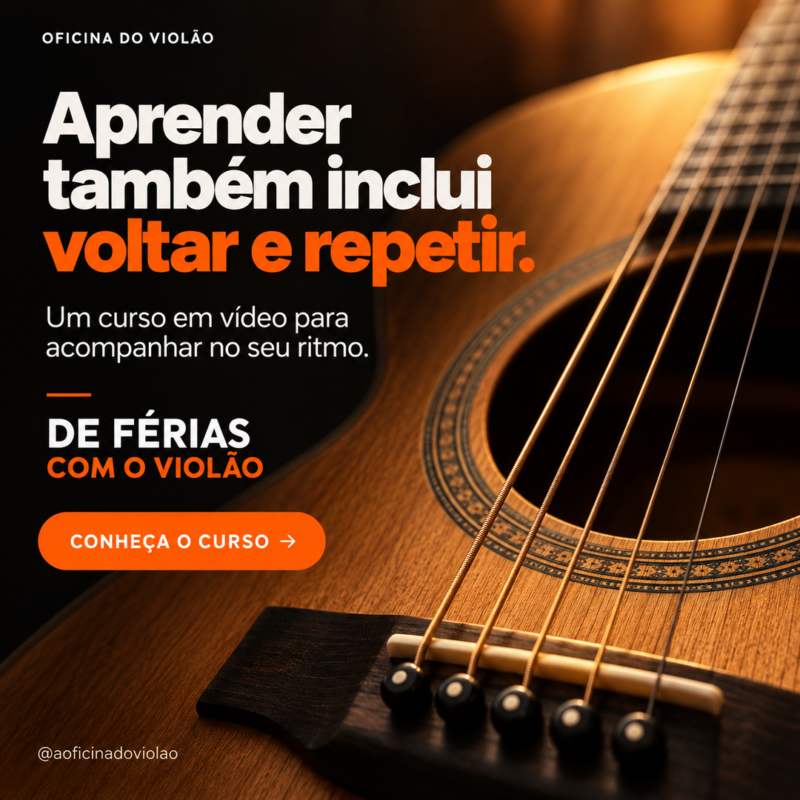
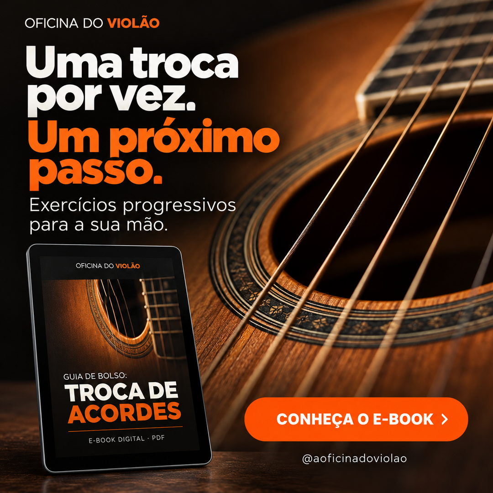
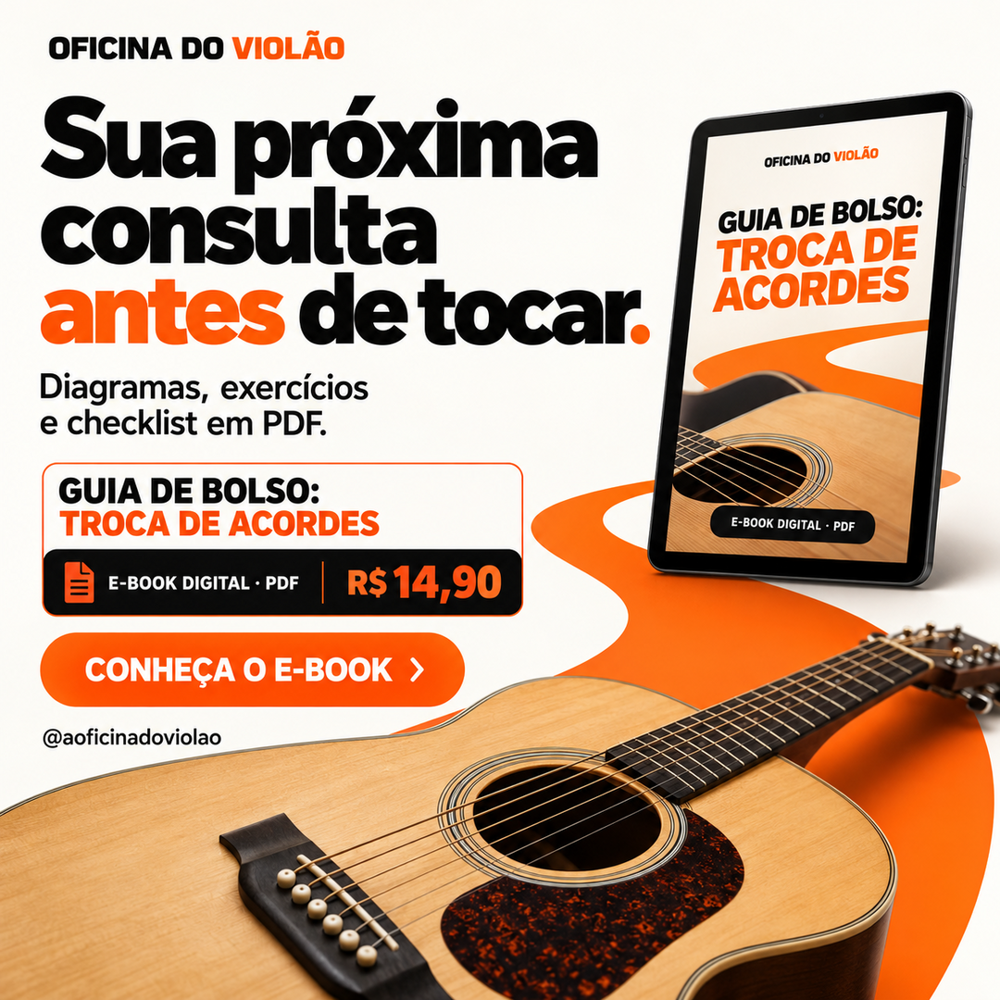
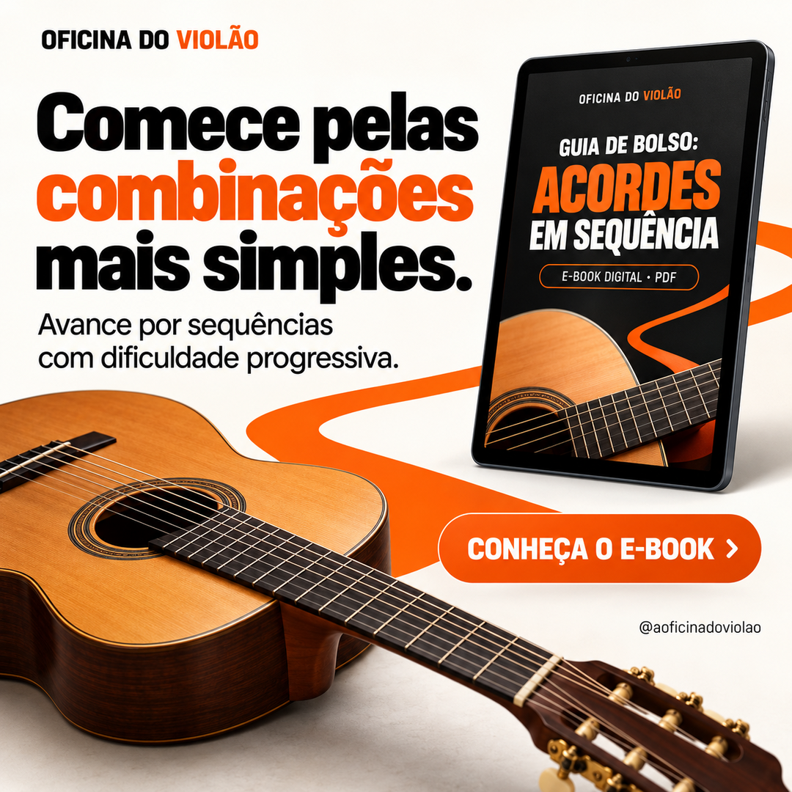
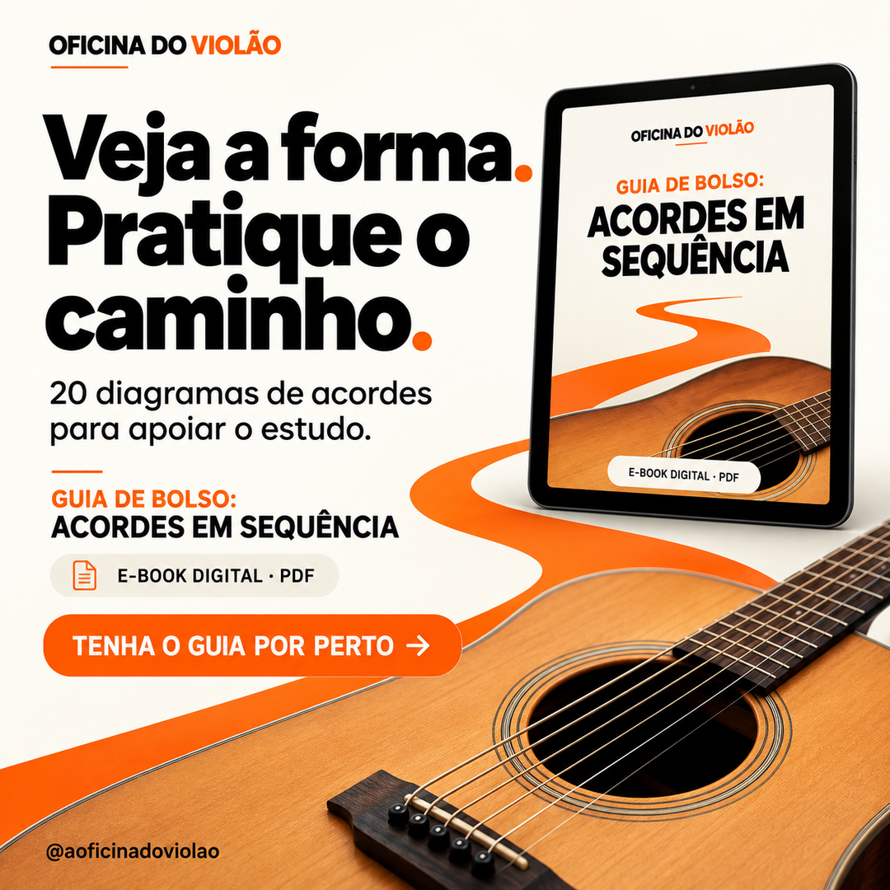
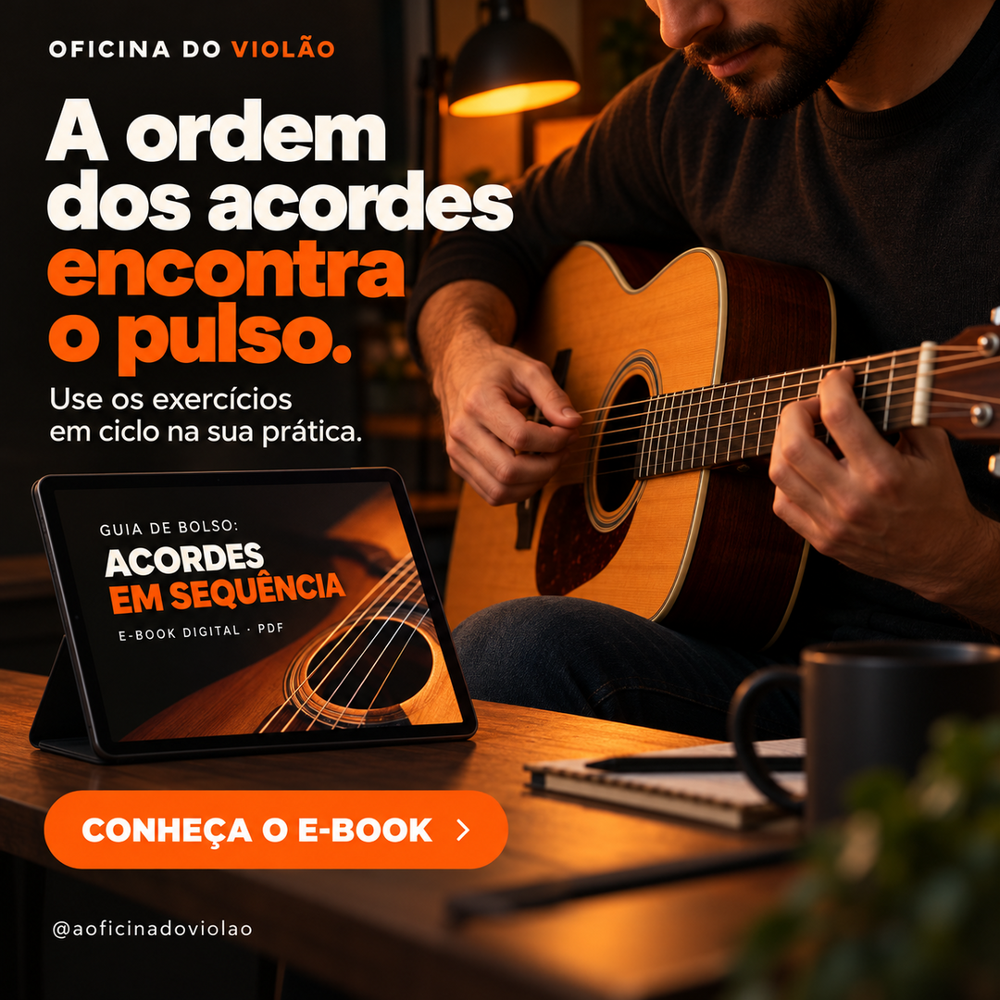
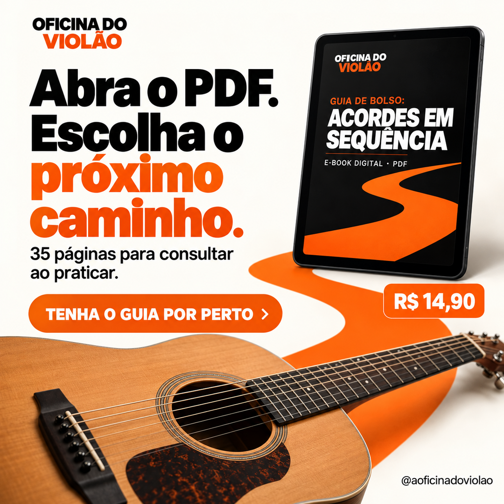

DFV11 · RetomadaVocê pode voltar de onde parou.Retome o violão com uma sequência de 27 aulas.Sem preço na arteBaixar PNG ↗
DFV12 · Promessa adiadaO plano de aprender merece sair da lista.Aproveite as férias para começar do zero.Sem preço na arteBaixar PNG ↗
DFV13 · Férias em casaSuas férias em casa podem ter trilha sonora.27 aulas em vídeo até as primeiras músicas.Sem preço na arteBaixar PNG ↗
DFV14 · Tempo de qualidadeReserve um momento das férias para você.Aprenda violão no seu ritmo, desde o início.Sem preço na arteBaixar PNG ↗
DFV15 · AutonomiaAprenda no horário que combina com suas férias.Um curso em vídeo para pausar, voltar e praticar.Sem preço na arteBaixar PNG ↗
DFV16 · Primeiro passoO primeiro acorde começa com uma decisão.Um caminho em vídeo para quem está começando.Sem preço na arteBaixar PNG ↗
DFV17 · Recomeço sem pressaRecomeçar também é avançar.Do zero às primeiras músicas, no seu ritmo.Sem preço na arteBaixar PNG ↗
DFV18 · Hobby além das telasQue tal trocar um pouco de rolagem por cordas?Use as férias para começar um hobby musical.Sem preço na arteBaixar PNG ↗
DFV19 · Aprender fazendoAssista a uma aula. Leve para o violão.27 aulas em vídeo para aprender e praticar.Sem preço na arteBaixar PNG ↗
DFV20 · Dúvida sobre ser inicianteNunca tocou? O começo está aqui.Um curso que parte do zero.Sem preço na arteBaixar PNG ↗
DFV21 · Intenção de tocarA vontade de tocar já apareceu. Dê continuidade.Siga uma sequência até as primeiras músicas.Sem preço na arteBaixar PNG ↗
DFV22 · Férias com lembrançaLeve destas férias a lembrança de ter começado.Aprenda os primeiros passos no violão.Sem preço na arteBaixar PNG ↗
DFV23 · Prática sem agenda fixaAs aulas acompanham o seu ritmo.Pause, reveja e pratique quando puder.Sem preço na arteBaixar PNG ↗
DFV24 · Caminho organizadoSeu começo pode ter uma sequência.27 aulas organizadas do zero às primeiras músicas.Sem preço na arteBaixar PNG ↗
DFV25 · Preço e retomadaVolte ao plano de aprender violão.27 aulas em vídeo por R$ 47 à vista.R$ 47 à vistaBaixar PNG ↗
DFV26 · Preço e férias em casaUm novo plano para suas férias em casa.Comece violão do zero por R$ 47 à vista.R$ 47 à vistaBaixar PNG ↗
DFV27 · Preço e simplicidadeUm violão. Vontade de aprender. Um começo.Curso online com 27 aulas em vídeo.R$ 47 à vistaBaixar PNG ↗
DFV28 · Preço e autonomiaSeu horário. Seu ritmo. Seu primeiro passo.Aprenda do zero com 27 aulas em vídeo.R$ 47 à vistaBaixar PNG ↗
DFV29 · Preço e oferta clara27 aulas para tirar a ideia do papel.Curso online: De Férias com o Violão.R$ 47 à vistaBaixar PNG ↗
DFV30 · Preço e repertório inicialSeu caminho até as primeiras músicas.27 aulas em vídeo para começar do zero.R$ 47 à vistaBaixar PNG ↗
DFV31 · Convite para começarSuas férias têm espaço para um primeiro acorde.Comece do zero com 27 aulas em vídeo.Sem preço na arteBaixar PNG ↗
DFV32 · Hobby pessoalUm hobby que começa nas suas mãos.Aprenda violão desde o primeiro passo.Sem preço na arteBaixar PNG ↗
DFV33 · Aproveitar o instrumentoSeu violão pode fazer parte das férias.Do zero às primeiras músicas, no seu ritmo.Sem preço na arteBaixar PNG ↗
DFV34 · Momento de descansoEntre um passeio e outro, um pouco de violão.27 aulas em vídeo para acompanhar no seu tempo.Sem preço na arteBaixar PNG ↗
DFV35 · Voltar ao sonhoA vontade de aprender ainda está aí?Encontre uma sequência para começar.Sem preço na arteBaixar PNG ↗
DFV36 · Prática no próprio espaçoSeu lugar de aprender pode ser o seu sofá.Curso online para começar violão do zero.Sem preço na arteBaixar PNG ↗
DFV37 · Plano possívelComece pela primeira aula. Depois, continue.27 aulas para orientar seus primeiros passos.Sem preço na arteBaixar PNG ↗
DFV38 · Identidade inicianteTodo começo tem um primeiro som.Aprenda violão do zero, no seu ritmo.Sem preço na arteBaixar PNG ↗
DFV39 · Organização versus buscaUm começo organizado para sua vontade de tocar.27 aulas em vídeo, do zero às primeiras músicas.Sem preço na arteBaixar PNG ↗
DFV40 · Rever aulaO movimento passou rápido? Veja outra vez.Aulas em vídeo para pausar e retomar.Sem preço na arteBaixar PNG ↗
DFV41 · Férias com intençãoEscolha algo novo para aprender nestas férias.Comece violão com uma sequência de aulas.Sem preço na arteBaixar PNG ↗
DFV42 · Tempo para tocarTire o violão da espera.Aproveite as férias para começar do zero.Sem preço na arteBaixar PNG ↗
DFV43 · Começo descomplicadoAinda não sabe tocar? É daí que a gente começa.27 aulas em vídeo até as primeiras músicas.Sem preço na arteBaixar PNG ↗
DFV44 · Lugar de práticaUm cantinho. Um violão. Seu próximo começo.Aprenda os primeiros passos no seu tempo.Sem preço na arteBaixar PNG ↗
DFV45 · Experiência ativaNestas férias, experimente fazer música.Curso online de violão para quem está começando.Sem preço na arteBaixar PNG ↗
DFV46 · Vontade antigaAprender violão está nos seus planos há quanto tempo?Use estas férias para começar.Sem preço na arteBaixar PNG ↗
DFV47 · Pequena decisãoHoje pode ser o dia da primeira aula.Siga um caminho de 27 aulas em vídeo.Sem preço na arteBaixar PNG ↗
DFV48 · Ritmo individualAprender também inclui voltar e repetir.Um curso em vídeo para acompanhar no seu ritmo.Sem preço na arteBaixar PNG ↗
DFV49 · Construção de repertórioAs primeiras músicas começam nos primeiros passos.Um curso de violão desde o início.Sem preço na arteBaixar PNG ↗
DFV50 · Tempo livre com direçãoDeixe uma aula guiar seu tempo com o violão.Assista, pause e pratique no seu ritmo.Sem preço na arteBaixar PNG ↗
DFV51 · Férias sem viagemMesmo sem viajar, você pode começar algo novo.Aprenda violão do zero em casa.Sem preço na arteBaixar PNG ↗
DFV52 · Preço e primeira aulaSua primeira aula pode ser o próximo passo.Curso completo com 27 aulas em vídeo.R$ 47 à vistaBaixar PNG ↗
DFV53 · Preço e hobbyMais música nos planos destas férias.Curso de violão do zero às primeiras músicas.R$ 47 à vistaBaixar PNG ↗
DFV54 · Preço e retomada tranquilaRetome a vontade de tocar, no seu ritmo.27 aulas em vídeo para começar pelo início.R$ 47 à vistaBaixar PNG ↗
DFV55 · Preço e férias em casaFérias em casa. Violão nas mãos.Aprenda do zero com aulas em vídeo.R$ 47 à vistaBaixar PNG ↗
DFV56 · Preço e caminho definidoPara começar, tenha um próximo passo.27 aulas organizadas para iniciantes.R$ 47 à vistaBaixar PNG ↗
DFV57 · Preço e autonomiaAssista quando puder. Pratique no seu ritmo.Do zero às primeiras músicas.R$ 47 à vistaBaixar PNG ↗
DFV58 · Preço e descobertaDescubra como é começar a tocar.Curso online de violão para iniciantes.R$ 47 à vistaBaixar PNG ↗
DFV59 · Preço e oferta acessívelComece um novo hobby por R$ 47 à vista.27 aulas em vídeo de violão.R$ 47 à vistaBaixar PNG ↗
DFV60 · Preço e decisãoEstas férias podem ter um novo começo.27 aulas para aprender violão desde o zero.R$ 47 à vistaBaixar PNG ↗
TAC11 · Acorde isolado versus transiçãoMontar é uma coisa. Trocar é outra.Pratique o movimento entre posições.Sem preço na arteBaixar PNG ↗
TAC12 · Velocidade prematuraAntes de acelerar, organize a troca.Use os exercícios e o checklist do guia.Sem preço na arteBaixar PNG ↗
TAC13 · Movimentos excessivosSeus dedos precisam ir tão longe?Observe e trabalhe os movimentos da troca.Sem preço na arteBaixar PNG ↗
TAC14 · Retomar batidaA batida não precisa recomeçar a cada acorde.Treine as transições de forma progressiva.Sem preço na arteBaixar PNG ↗
TAC15 · Treino específicoTem uma troca que sempre interrompe você?Dê atenção a esse movimento na sua prática.Sem preço na arteBaixar PNG ↗
TAC16 · Saber o próximo exercícioPegou o violão. E agora, o que treinar?Encontre exercícios e sessões de prática no guia.Sem preço na arteBaixar PNG ↗
TAC17 · Frustração com repetiçãoA mesma troca trava de novo?Revise o movimento antes de repetir mais rápido.Sem preço na arteBaixar PNG ↗
TAC18 · Tempo curtoPouco tempo? Dê um foco à prática.O guia propõe sessões de 10 e 15 minutos.Sem preço na arteBaixar PNG ↗
TAC19 · AutoobservaçãoO que acontece entre um acorde e outro?Um guia para observar e praticar essa passagem.Sem preço na arteBaixar PNG ↗
TAC20 · Transição e confiançaConhecer a posição é só parte do caminho.Trabalhe também a passagem para a próxima.Sem preço na arteBaixar PNG ↗
TAC21 · Critério para acelerarQuando vale aumentar a velocidade?Use o checklist antes de acelerar.Sem preço na arteBaixar PNG ↗
TAC22 · Material de apoioDeixe seu próximo treino ao lado do violão.PDF com exercícios, diagramas e checklist.Sem preço na arteBaixar PNG ↗
TAC23 · Prática progressivaUma troca por vez. Um próximo passo.Exercícios progressivos para a sua mão.Sem preço na arteBaixar PNG ↗
TAC24 · Desafio da práticaQue tal levar um desafio para o treino?Conheça o desafio das 10 trocas do guia.Sem preço na arteBaixar PNG ↗
TAC25 · Preço e pausa indesejadaA música parou na troca? Trabalhe esse ponto.Guia digital com exercícios progressivos.R$ 14,90Baixar PNG ↗
TAC26 · Preço e treino curto10 minutos com um foco definido.Sessões de prática em um guia digital.R$ 14,90Baixar PNG ↗
TAC27 · Preço e consultaSua próxima consulta antes de tocar.Diagramas, exercícios e checklist em PDF.R$ 14,90Baixar PNG ↗
TAC28 · Preço e planejamentoLeve um roteiro para a próxima prática.Guia de Bolso: Troca de Acordes.R$ 14,90Baixar PNG ↗
TAC29 · Preço e valor concreto28 páginas. Uma habilidade para trabalhar.Pratique a troca de acordes com direção.R$ 14,90Baixar PNG ↗
TAC30 · Preço e transiçãoDo acorde conhecido à troca praticada.Exercícios progressivos por R$ 14,90.R$ 14,90Baixar PNG ↗
SEQ01 · Acordes isoladosConhece os acordes. Falta juntar o caminho?Pratique combinações em uma ordem progressiva.Sem preço na arteBaixar PNG ↗
SEQ02 · Prática aleatóriaQual sequência você vai praticar hoje?Escolha entre 11 sequências organizadas.Sem preço na arteBaixar PNG ↗
SEQ03 · Retorno ao começoO último acorde não é o fim do treino.O guia inclui a volta ao primeiro acorde.Sem preço na arteBaixar PNG ↗
SEQ04 · ContinuidadeUm acorde precisa levar ao próximo.Exercícios em ciclo para trabalhar continuidade.Sem preço na arteBaixar PNG ↗
SEQ05 · Dificuldade crescenteCada sequência, um próximo desafio.11 sequências em ordem de dificuldade.Sem preço na arteBaixar PNG ↗
SEQ06 · Rotina curtaSeu treino pode caber em 10 minutos.O guia traz rotinas de 10 e 15 minutos.Sem preço na arteBaixar PNG ↗
SEQ07 · Ciclo completoTreine a volta. Ela também faz parte.Pratique sequências completas, incluindo o retorno.Sem preço na arteBaixar PNG ↗
SEQ08 · Uso de acordes conhecidosDê um caminho aos acordes que você já sabe.Um guia para praticar como eles aparecem juntos.Sem preço na arteBaixar PNG ↗
SEQ09 · Acordes abertosComece pelas combinações mais simples.Avance por sequências com dificuldade progressiva.Sem preço na arteBaixar PNG ↗
SEQ10 · Pestanas com contextoSua pestana pode entrar em uma sequência.Encontre novas formas dentro de um caminho.Sem preço na arteBaixar PNG ↗
SEQ11 · SétimasQuer ouvir outra cor entre os acordes?O guia inclui sequências com sétimas.Sem preço na arteBaixar PNG ↗
SEQ12 · Acorde de passagemEntre dois acordes, pode existir uma passagem.Explore o diminuto em sequências do guia.Sem preço na arteBaixar PNG ↗
SEQ13 · InversõesO baixo também pode caminhar.Explore inversões em sequências de acordes.Sem preço na arteBaixar PNG ↗
SEQ14 · Ordem de práticaAbra uma página. Escolha uma sequência.35 páginas em PDF para acompanhar sua prática.Sem preço na arteBaixar PNG ↗
SEQ15 · AntecipaçãoQual acorde vem depois?Pratique a ordem e a passagem dentro do ciclo.Sem preço na arteBaixar PNG ↗
SEQ16 · Conexão musicalVocê reconhece acordes. Consegue conectá-los?Pratique combinações com começo e retorno.Sem preço na arteBaixar PNG ↗
SEQ17 · Organização do estudoMenos escolhas soltas. Mais sequência na prática.11 caminhos organizados por dificuldade.Sem preço na arteBaixar PNG ↗
SEQ18 · Progresso por etapasVocê não precisa estudar tudo de uma vez.Escolha uma sequência e trabalhe cada etapa.Sem preço na arteBaixar PNG ↗
SEQ19 · Consulta visualVeja a forma. Pratique o caminho.20 diagramas de acordes para apoiar o estudo.Sem preço na arteBaixar PNG ↗
SEQ20 · Pulso e continuidadeA ordem dos acordes encontra o pulso.Use os exercícios em ciclo na sua prática.Sem preço na arteBaixar PNG ↗
SEQ21 · Retomada do repertórioJá sabe alguns acordes? Dê o próximo passo.Comece a praticar combinações completas.Sem preço na arteBaixar PNG ↗
SEQ22 · Preço e quantidade de sequências11 sequências para dar direção ao treino.Guia digital com dificuldade progressiva.R$ 14,90Baixar PNG ↗
SEQ23 · Preço e retorno ao inícioPratique o caminho inteiro. Inclusive a volta.Exercícios em ciclo em um guia digital.R$ 14,90Baixar PNG ↗
SEQ24 · Preço e rotina curtaUma sequência para a próxima pausa do dia.Rotinas de prática de 10 e 15 minutos.R$ 14,90Baixar PNG ↗
SEQ25 · Preço e valor em páginas35 páginas para conectar seus acordes.Sequências progressivas e diagramas em PDF.R$ 14,90Baixar PNG ↗
SEQ26 · Preço e organizaçãoDê uma ordem aos acordes do seu treino.11 sequências organizadas por dificuldade.R$ 14,90Baixar PNG ↗
SEQ27 · Preço e expansão de vocabulárioDos acordes abertos a novos caminhos.Explore pestanas, sétimas e inversões no guia.R$ 14,90Baixar PNG ↗
SEQ28 · Preço e acessibilidade do materialSeu próximo roteiro de prática por R$ 14,90.Guia de Bolso: Acordes em Sequência.R$ 14,90Baixar PNG ↗
SEQ29 · Preço e consultaAbra o PDF. Escolha o próximo caminho.35 páginas para consultar ao praticar.R$ 14,90Baixar PNG ↗
SEQ30 · Preço e aplicaçãoConecte o que você já sabe tocar.Sequências, diagramas e exercícios em ciclo.R$ 14,90Baixar PNG ↗